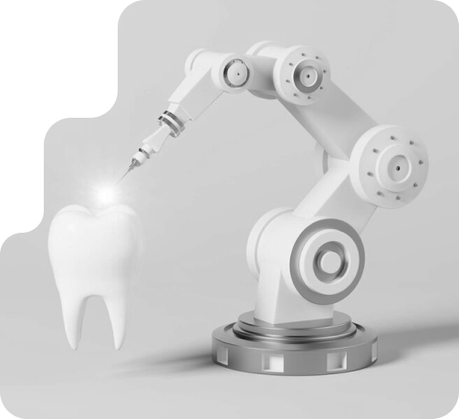

Все просто: у нашій клініці стоматологи використовують протоколи лікування, запроваджені провідними
спеціалістами та перевіреними системою доказової медицини.
Ми використовуємо тільки найякісніші матеріали виробництва Японії та США, а технічне бладнання відповідає
рівню кращих стоматологічних клінік світу. Наприклад, замість зняття відбитків зубів — ми їх скануємо
спеціальним внутрішньоротовим 3D сканером, а замість відливання моделей щелеп з гіпсу — ми роздруковуємо їх
на
надточному 3D принтері.

Наші кабінети обладнанні операційними мікроскопами, які дозволяють отримати х12 збільшення для того, щоб
лікар міг помітити найменші деталі. Такі деталі роблять лікування в Futurum Dentistry дуже комфортними, але
якщо ви все одно дуже хвилюєтесь, то для вас є послуга «Лікування уві сні», що перетворює найскладніші
операції в можливість гарно виспатись, чого нам так зазвичай не вистачає.
Але найголовніше у нас — це відношення персоналу та лікарів до пацієнтів. Ви завжди залишаєтесь у хорошому
настрої після відвідування клініки. Приходьте та переконайтесь у всьому самі!
Наша команда і весь персонал віддані своїй роботі. Будемо раді зустрічі з вами та вашою родиною. Гарантуємо, що
ви приємно здивуєтесь, а подальші стосунки будуть побудовані лише на довірі до нас. Наша професійна команда
захоплена своєю справою та прагне надати пацієнтам позитивний стоматологічний досвід. Ми розуміємо, що кожен
пацієнт унікальний і заслуговує якісної стоматологічної допомоги, яка відображає його індивідуальні потреби, а
стоматологія в Києві може бути доступною для кожного! Ваша посмішка буде ідеальною.
Широкий спектр послуг у сфері
як дорослої, так і дитячої стоматології
Чистка зубів — важлива частина забезпечення гарної гігієни порожнини рота та його загального здоров’я в
цілому. Процес чищення зубів можна пройти за кілька кроків: видалення зубного каменю і нальоту, ретельну
поліровку зубів, чищення зубною ниткою, полоскання і застосування спеціальних паст. Ми забезпечуємо чистку
зубів поруч з вами, аби ваша гігієна порожнини рота була бездоганною за рахунок відсутності бактерій, які
можуть привести до захворювання пародонту.
В нашій стоматологічній клініці ми пропонуємо пацієнтам професійне чищення:
1. Видалення зубного каменю з поверхні зубів. Камінь представляє собою затверділий наліт, який важко
видалити з поверхні зуба. Зубний камінь на зубах має тенденцію викликати запалення ясен (пародонтит), тому
пародонтологія займається вирішенням таких проблем, або стоматит лікування якого потім буде нелбхідне.
2. Полірування зубів. Дозволяє видалити пігмент і наліт, які можуть залишитися на зубах після належного
очищення.
3. Використання спеціальних паст. Спеціальний склад паст корисний для зубів, тому що він допомагає:
відновлювати (ремінералізувати) ослаблену зубну емаль, уповільнювати втрату мінералів, запобігатиме
зростанню шкідливих бактерій в порожнині рота.
Ми рекомендуємо проводити чистку раз на 6 місяців. Якщо з моменту останнього чищення зубів пройшло більше
ніж пів року, призначте зустріч з нами!
Зубні імплантати — це один з методів, який провідні стоматологи Києва використовують для відновлення
зовнішнього вигляду та функціональності одного або декількох відсутніх зубів.
Що таке зубний імплант?
Ми пропонуємо дентальні імплантати, щоб замінити пошкоджені або відсутні зуби в роті. Вони виглядають,
відчуваються т, а функціонують як природні зуби. Людина не тільки набуває виготовлені на замовлення змінні
зуби, але також відновлює здатність їсти, пити і говорити без будь-яких незручностей. Зубний імплант
складається з трьох частин, включаючи імплант, абатмент і коронку.
Імплантація зубів — процедура
Процес дентальної імплантації вимагає двох етапів до завершення.
1. Хірургічна фаза. Проводиться з використанням місцевої анестезії, яка повністю знеболює ротову порожнину
при хірургічної установці імпланта в кісткову тканину.
Під час встановлення титанового імплантата використовується спеціальний інструмент для створення місця в
кістковій тканині під лінією ясен. Після завершення процедури імплантації угвинчується формувач ясен в
імплант, щоб забезпечити підтримку м’яких тканин навколо імпланта
Далі ясна закриваються, і їм потрібно буде зажити протягом декількох місяців, щоб забезпечити успішне
зрощення імплантата з кісткою.
2. На другому етапі стоматолог знімає зліпок для створення коронки, яка діє як замісник зуба або зубів,
якщо в роті міститься кілька імплантатів. Форма та посадка в роті будуть перевірені і відрегульовані, він
зручно поміщається в зубний ряд.
Імплантологія достатньо розвинута наука, а матеріали, з яких виготовлений дентальний імплантат, довговічні
та функціонують як природні зуби. При належному догляді зубної імплант може прослужити все життя.
Якщо вам не вистачає одного або декількох зубів і ви хочете поставити імплант у Києві, запишіться на
безкоштовну консультацію до хірурга-стоматолога!
Ми пропонуємо послуги пломбування зубів у Києві, щоб відновити пошкоджені зуби до їх нормальної форми та
функцій. Реставрація зуба ізолює можливе проникнення бактерій та запобігає подальше руйнування. Його можна
створити з різних матеріалів, таких як композитна смола або амальгама.
Тип пломби буде залежати від стану вашого зуба та безпосередньо рекомендацій стоматолога. Сама процедура
пломбування зуба швидка та безболісна. Наші лікарі зможуть підібрати пломби, які будуть максимально
наближені до природнього кольору ваших зубів. Матеріал пломби складається з композитних елементів, це
речовини які можуть імітувати зносостійкість та прозорість природного зуба.
Процедура частіше за все проводиться з використанням місцевих анестетиків (знеболення), тому проходить
лікування без болю і допомогає зберегти цілісність структури зуба. Але якщо вас турбує зубна біль, то
пломбування зуба не вірішить проблему- в такому випадку необхідно лікувати кореневі канали, що дуже
ускладнює завданя лікаря. Будь ласка, лікуйте зуби своєчасно, щоб уникнути ускладнень, які викликає карієс.
Наша стоматологічна клініка «Futurum Dentistry» пропонує як просте видалення зубів у Києві, так і складне
хірургічне втручання. Така процедура зазвичай проводиться, у разі неможливості вилікувати зуб.
Видалення зубів Київ
Видалити зуб — це нескладна процедура. Її зазвичай рекомендують, коли у пацієнта є великі ушкодження в
результаті карієсу, травми або інфекції, і його не можна врятувати за допомогою лікування кореневих каналів
або будь-яких інших варіантів стоматологічного лікування.
Видалення зубів мудрості
Зуби мудрості — це останні корінні зуби, які розташовані на верхній та нижній щелепі і зазвичай
прорізуються у віці від 16 до 20 років. Коли в роті недостатньо місця, вони не можуть правильно прорізатися.
Це може спровокувати ряд проблем. Ми забезпечуємо видалення зуба мудрості швидко та якісно, щоб запобігти
проблемам в майбутньому.
Причини видалення зубів мудрості
Не всі зуби мудрості вимагають видалення, однак зуби мудрості можна видалити, щоб запобігти:
1. Ушкодженню сусідніх зубів: другі корінні зуби — це зуби безпосередньо перед зубами мудрості. Зуби
мудрості можуть викликати карієс, пародонтоз та навіть втрату кісткової маси.
2. Захворювання: кісти та пухлини можуть розвиватися в областях, що оточують зуби мудрості.
3. Інфекція: коли частинки їжі потрапляють під тканину ясен, може виникнути інфекція і викликати проблеми
зі здоров’ям порожнини рота.
4. Зуби мудрості можуть чинити тиск на існуючі зуби і викликати зсув (скупченість або скручування).
Запишіться на прийом до нашого хірурга-стоматолога вже зараз, якщо у вас є які-небудь питання про видалення
зубів.
Стоматологічна клініка «Futurum Dentistry» пропонує послуги з вирівнювання зубів у Києві. Ми зможемо
допомогти, якщо у вас:
— Проблеми із прикусом;
— Неправильне положення зубів;
— Наявність можливих ускладнень.
Процедура не вимагає ніякого додаткового знеболення та не завдає дискомфорту пацієнту. Наш професіональний
лікар ортодонт у Києві проведе детальний огляд та надасть консультацію з приводу виправлення прикусу чи
зміни положення зубів.
Первинний огляд дозволить скласти лікарю план лікування та рекомендації. На основі отриманої інформацію та
зліпка зубів, лікар:
— Розробляє план лікування;
— Визначає вид вирівнювання;
— Визначає терміни етапів лікування;
— Складає вартість процедури.
Ви самі обираєте встановлювати встановити металеві брекети, чи можливо вам більше до вподоби керамічні
брекети. Лікар врахує ваші побажання, а у разі складності вибору матеріалу, розповість про кожен тип окремо.
Ціна брекетів індивідуальна, залежно від складності проблеми.
Якщо ви бажаєте вирівняти зуби — запищіться на консультацію до ортодонта!
Відбілювання зубів включає в себе процес освітлення зубів за допомогою застосування перевірених розчинів
для відбілювання. Це популярна косметична процедура через її здатності покращувати зовнішній вигляд посмішки
людини.
Професійне відбілювання зубів Київ
Якщо ви хочете відбілити зуби у Києві, необхідна консультація, щоб визначити, чи підходить вам ця
процедура. Зуби кожної людини мають певний поріг чутливості. Щоб переконатися, що ваші зуби не постраждали,
вам слід обговорити процедуру зі своїм стоматологом.
Що стосується результатів і їх тривалості, залежить від способу життя людини та способу догляду за
порожниною рота. При цьому ефект зазвичай триває один рік. Однак, якщо ви часто курите чи вживаєте продукти,
що забарвлюють зуби, втрата кольору настане на багато швидше ніж ви того очікували.
Якщо ви хочете відбілити зуби, зверніться до нас і ми допоможемо вам у цьому.
Стоматологічна клініка «Futurum Dentistry» пропонує послуги з вирівнювання зубів у Києві. Ми зможемо
допомогти, якщо у вас:
— Проблеми із прикусом;
— Неправильне положення зубів;
— Наявність можливих ускладнень.
Процедура не вимагає ніякого додаткового знеболення та не завдає дискомфорту пацієнту. Наш професіональний
лікар ортодонт у Києві проведе детальний огляд та надасть консультацію з приводу виправлення прикусу чи
зміни положення зубів.
Первинний огляд дозволить скласти лікарю план лікування та рекомендації. На основі отриманої інформацію та
зліпка зубів, лікар:
— Розробляє план лікування;
— Визначає вид вирівнювання;
— Визначає терміни етапів лікування;
— Складає вартість процедури.
Ви самі обираєте встановлювати встановити металеві брекети, чи можливо вам більше до вподоби керамічні
брекети. Лікар врахує ваші побажання, а у разі складності вибору матеріалу, розповість про кожен тип окремо.
Ціна брекетів індивідуальна, залежно від складності проблеми.
Якщо ви бажаєте вирівняти зуби — запищіться на консультацію до ортодонта!
Сучасна медицина має безліч варіантів повного відновлення зруйнованих або втрачених зубів. Ортопедія не
вимагає задіяння природних зубів, зберігаючи їх здоров’я та красу. Наша стоматологічна клініка надає послуги
протезування зубів у Києві.
Зубні коронки бувають наступних видів:
— пластмасові коронки;
— металокерамічні коронки;
— цирконієві коронки;
— керамічні коронки
— вініри (естетична стоматологія);
Існує два способи кріплення коронок:
— на корінь рідного зуба;
— на імплантований в кісткову тканину титановий імплантат.
Запишіться на консультацію в клініку «Futurum Dentistry», і кваліфіковані фахівці допоможуть вам вибрати
оптимальний вигляд та форму коронок, виходячи з конкретної клінічної ситуації.
Чому саме ми?
Наші стоматологи — це висококваліфіковані професіонали, які підтримуються
найсучаснішим стоматологічним обладнанням та технологіями, що дає змогу надавати лише якісні
стоматологічні послуги.
Ми прагнемо до того, щоб пацієнти отримували чудовий догляд та особисту
увагу, а також достатній рівень співчуття та доброту. Оскільки пацієнти є нашим найважливішим
надбанням, мета стоматологічної клініки «Futurum Dentistry» — розвивати довготривалі, довірчі стосунки між ними.
Наша комфортна атмосфера та світлі кабінети надають пацієнтам
розслаблюючого відчуття перед тим, як пройти будь-яке лікування зубів. Область лікування повністю приватна,
оскільки ми вважаємо, що захист конфіденційності є досить важливим аспектом лікування.
Якщо ви проживаєте в місті Київ або його околицях та маєте на меті покращити свою
посмішку, будь ласка, зверніться до нашого стоматологічного центру, щоб запланувати аналіз посмішки
та обговорити варіанти лікування. Ми сподіваємось задовольнити ваші стоматологічні потреби.
 Бадалян ГригорГоловний лікар стоматолог-хірург, ортопед
Бадалян ГригорГоловний лікар стоматолог-хірург, ортопед Шапаренко ІгорЛікар стоматолог терапевт, ендодонтист
Шапаренко ІгорЛікар стоматолог терапевт, ендодонтист